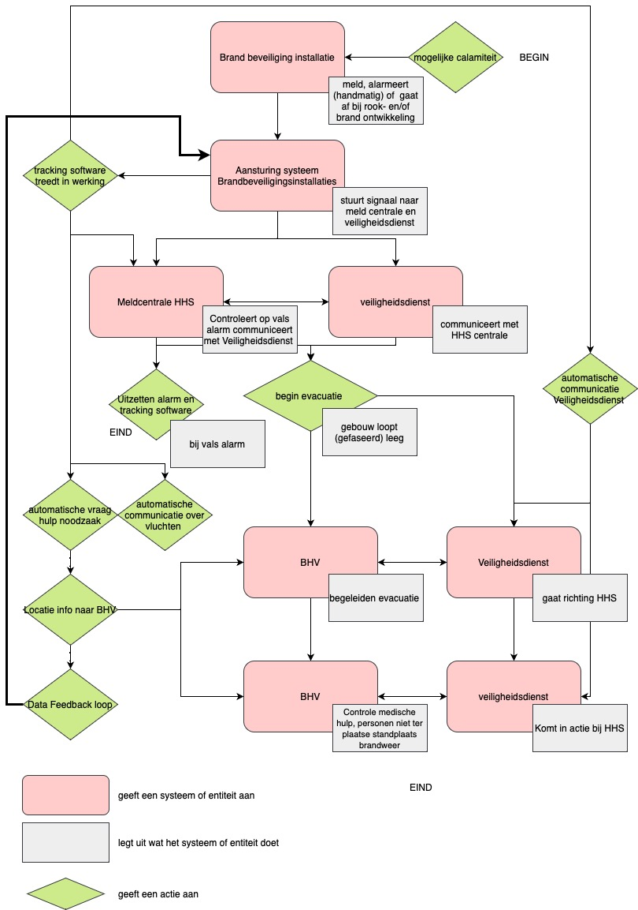

Welkom op de "Minor SBIM Website & Case Study", een website gewijd aan de integratie van Smart Building en Digital Twin technologieën binnen de Haagse Hogeschool. Deze website, ontstaan uit de opdracht van de Minor SBIM, fungeert als een interactief knooppunt voor het delen van kennis en bevindingen uit een uitgebreid essay over dit onderwerp. We richten ons op hoe deze innovatieve technologieën niet alleen de efficiëntie van gebouwbeheer verbeteren, maar ook cruciaal zijn voor het waarborgen van veiligheid, met name tijdens evacuaties van mindervaliden. Ontdek hier hoe Smart Buildings en Digital Twins de toekomst van onderwijsomgevingen vormgeven.
Het hoofdstuk "Smart Building & Digital Twin" in het essay verkent de betekenis en toepassing van deze concepten in de context van de Haagse Hogeschool. Het beschrijft Smart Buildings als geïntegreerde systemen die intelligente gebouwtechnologieën en infrastructuren combineren, gericht op het verbeteren van gebruikservaring, efficiëntie, veiligheid en beheer. Er wordt verwezen naar twee onderzoeken die verschillende definities en aspecten van Smart Buildings belichten, zoals intelligentie, enterprise, materialen, ontwerp en gebouwcontrole. Vervolgens wordt de rol van Digital Twins onderzocht, waarbij deze worden beschreven als digitale replica's die real-time data gebruiken om gebouwfuncties te optimaliseren en een zelfsturende entiteit te creëren. De combinatie van deze technologieën belooft een aanzienlijke verbetering in gebouwbeheer en duurzaamheid.
De uit eigen visie opgestelde definitie van een Smart building luidt:
“Een Smart Building is een adaptief gebouw die, door integratie van smart technologies en sensoring, proactief gebouwfuncties optimaliseert, gebruikservaring verbeterd, gebouw informatie deelt en veiligheid optimaliseert, ter ondersteuning van veiligheid, duurzaamheid, beheer en energie efficiëntie.”
In de case study wordt een evaluatie van de huidige veiligheidsprocedures in het Haagse Hogeschool hoofdgebouw, met specifieke focus op de veiligheid van mindervalide personen tijdens calamiteiten, uitgevoerd. Gebaseerd op inzichten verkregen uit een interview met een veiligheidsadviseur, worden de huidige uitdagingen, waaronder de identificatie en evacuatie van mindervalide personen, onder de loep genomen. Er wordt geconcludeerd dat het huidige systeem tekortschiet in het efficiënt lokaliseren van deze individuen tijdens noodgevallen. Als oplossing wordt het Smart Building Locatie Tracking Systeem (SBLTS) voorgesteld, dat real-time locatie-informatie biedt door de integratie van wifi-access points en brandinstallaties. Dit innovatieve systeem zou niet alleen de veiligheid verhogen, maar ook de algemene efficiëntie van evacuatieprocessen verbeteren. Het onderzoek benadrukt echter ook het belang van verdere ontwikkeling en evaluatie van SBLTS, met speciale aandacht voor privacykwesties en integratie met de bestaande infrastructuur.
Onderstaand staan de flowcharts van de huidige en beoogde informatie schematisch weergegeven

Flowchart Huidige informatie flow
Flowchart beoogde informatie flow
In de conclusie wordt benadrukt dat de integratie van het Smart Building Locatie Tracking Systeem (SBLTS) in het Haagse Hogeschool hoofdgebouw goed aansluit bij de gedefinieerde visie van een Smart Building. Dit systeem verbetert de respons op noodsituaties door real-time locatiedata te verstrekken, vooral voor personen die niet zelfstandig kunnen evacueren. De effectiviteit van SBLTS als veiligheidsmaatregel toont aan hoe slimme technologieën kunnen bijdragen aan een veiliger, efficiënter en meer responsief gebouw. De noodzaak van verdere ontwikkeling en onderzoek wordt benadrukt, met name met betrekking tot technische haalbaarheid, privacyaspecten en integratie met bestaande systemen, om ervoor te zorgen dat het systeem voldoet aan de adaptieve, proactieve en veiligheidsoptimaliserende doelstellingen van een Smart Building.
Smart Building Information Management/Technologies
SBIM houdt in het toepassen van informatiemanagement om kosten door verlies, informatieverlies, en vergelijkbare fouten in alle stadia van de bouw van bebouwde omgevingen te minimaliseren. Dit betreft alle bouwfasen, van het Schetsontwerp (SO) tot de sloopfase. Er bestaan diverse methoden om informatiemanagement te implementeren ter voorkoming van deze problemen. SBIM kan op verschillende wijzen toegepast worden, namelijk op procesmatig niveau, op het niveau van software en data, en op bedrijfsniveau.
SBIM: Processen
Op procesniveau kunnen diverse methoden ingezet worden voor het analyseren, verbeteren, vernieuwen en ontwerpen van bestaande processen. Voorbeelden van deze methoden zijn systems engineering (SE), ontologieën, informatie levering specificaties (ILS) en het uitvoeren van analyses zoals LEAN-analyse, Makigami, en het opstellen van procesdiagrammen. Deze methoden bieden inzicht in huidige processen en helpen bij het verbeteren van toekomstige werkprocessen.
SBIM: software en data
Op het gebied van software kan tijdens verschillende bouwfasen gebruik worden gemaakt van Common Data Environments (CDE), Object Type Libraries (OTL), Unified Markup Language-diagrammen (UML), (model based) systems engineering (MBSE, SE), Functional Breakdown Structures (FBS), taxonomieën, partonomieën en, zoals eerder vermeld bij SBIM: Processen, ILS-tools. Daarnaast kunnen 'nieuwe' soorten databanken en datatypes worden toegepast, zoals graph-databases, GIS-data en IFC-data. Hierbij kan ook onderscheid worden gemaakt in het gebruik van softwaretools of in de wijze waarop verschillende datatypes worden georganiseerd (datacommunicatie, informatieopbouw, kardinaliteiten en onderlinge verhoudingen).
SBIM: bedrijfsvoering
Voor de implementatie van SBIM in de bedrijfsvoering kunnen diverse methodieken worden ingezet om een bedrijf te analyseren, te structureren en te organiseren. Dit bevordert de bedrijfsontwikkeling en helpt setbacks voorkomen voor een geoptimaliseerde bedrijfsvoering. Methoden die hierbij kunnen worden ingezet zijn onder andere Project Informatie Eis (PIE), ILS, Bouw UitvoeringsPlan (BUP), Cybersecurity plan, het Negen-vlaks model, de 7S-analyse van McKinsey en het gebruik van openstandaarden zoals NEN-EN ISO 19650-1 t/m 4.
Samenvattend
Smart Building Information Management/Technologies (SBIM) is onmisbaar voor het realiseren van smart buildings, waarbij het optimaliseren van het bouwproces centraal staat. Door SBIM toe te passen in alle bouwfasen, van ontwerp tot sloop, kunnen we niet alleen kosten door verlies en informatieverlies minimaliseren, maar ook gebouwen creëren die intelligenter en efficiënter zijn. Bij de processen zorgt SBIM voor een nauwkeurige analyse en verbetering van werkmethoden, gebruikmakend van tools zoals systems engineering en LEAN-analyses. Dit is essentieel voor het ontwikkelen van gebouwen die niet alleen voldoen aan de huidige eisen, maar ook aanpasbaar zijn voor toekomstige technologieën en behoeften. op het gebied van software en data, ondersteunt SBIM de integratie van geavanceerde technologieën in gebouwen, zoals automatiseringssystemen en energiebeheer, wat cruciaal is voor smart buildings. Door gebruik te maken van gespecialiseerde tools en databanken, wordt de basis gelegd voor gebouwen die zowel functioneel als duurzaam zijn. In de bedrijfsvoering helpt SBIM bij het implementeren van strategieën die niet alleen de bouw van smart buildings bevorderen, maar ook de langetermijnbeheer en -onderhoud ervan optimaliseren. Door verschillende analysetechnieken en standaarden toe te passen, kunnen we gebouwen ontwerpen die intelligent reageren op hun omgeving en gebruikers. Kortom, SBIM speelt een sleutelrol in de evolutie naar smart buildings. Het biedt een framework waarbinnen technologie, procesoptimalisatie en strategisch management samenkomen om gebouwen te realiseren die slim, duurzaam en toekomstbestendig zijn. Dit is niet alleen een vooruitgang voor de bouwsector, maar ook een stap richting een slimmere en duurzamere bebouwde omgeving.